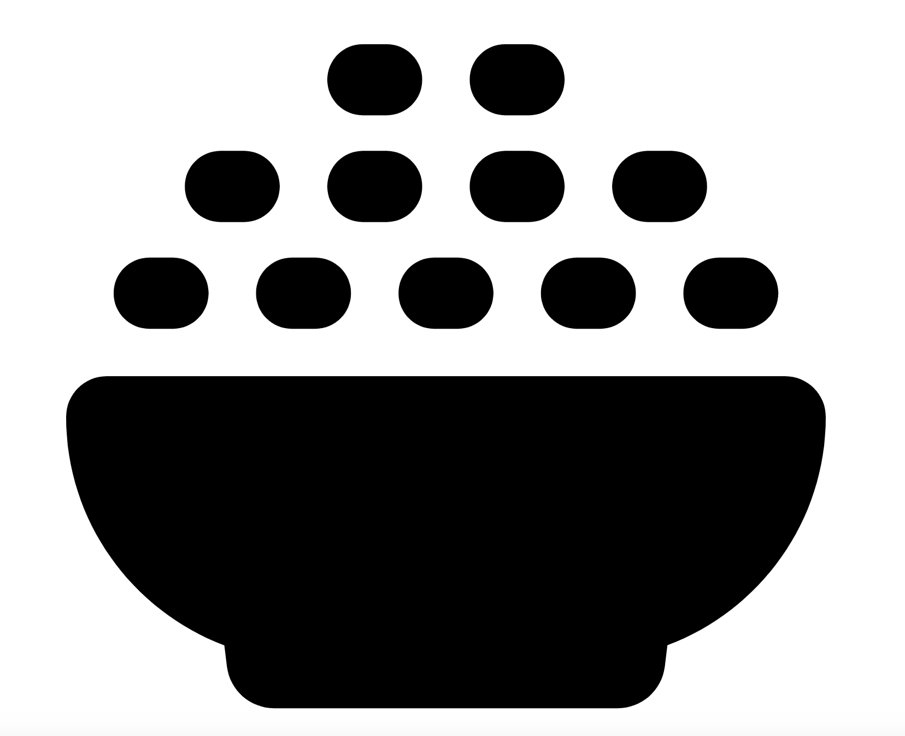

Tasty Tortilla Breakfast Sandwich
Ready in
25 Mins.

Ingredients
7
Serves
2 People.
25 Mins.
7
2 People.
Preheat oven to 375.
Treat sheet pan with nonstick cooking spray.
Microwave tortillas for 20 seconds each (ovens vary).
Put fillings in the middle; any order you choose.
Roll up egg roll-style.
Put seam-side down on sheet pan.
Bake for 15 minutes.
Let rest for 2 minutes.
Eat whole, or cut in half and enjoy.
2 - (10 inch) tomato-basil tortillas or (10 inch) flour tortillas
2 - eggs, cooked to scrambled (pan or microwave)
2 - slices deli ham
1 - small onion, chopped
1 - small tomatoes, chopped
2 - slices American cheese or 2 slices cheddar cheese
nonstick cooking spray